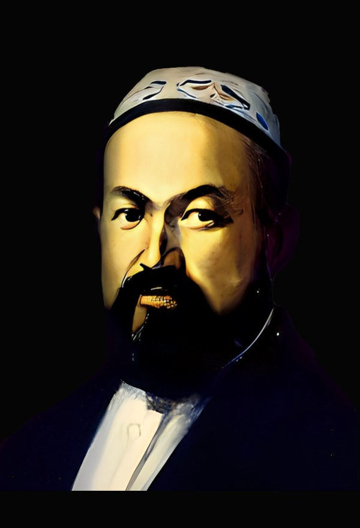
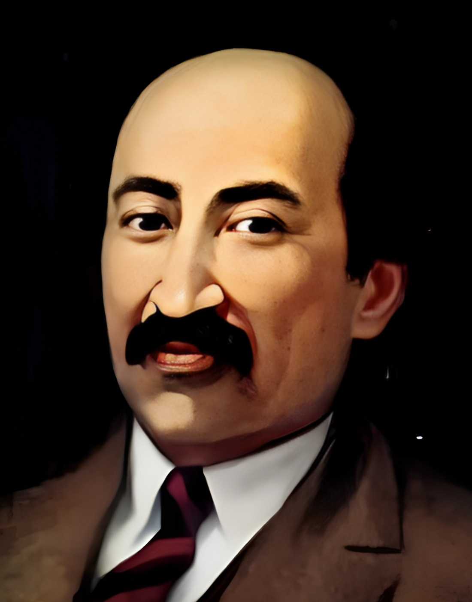
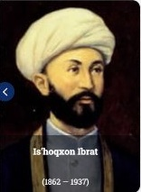
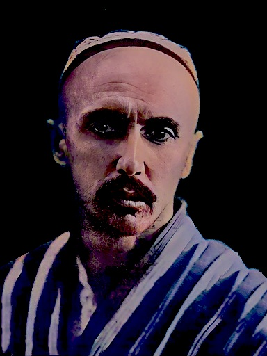
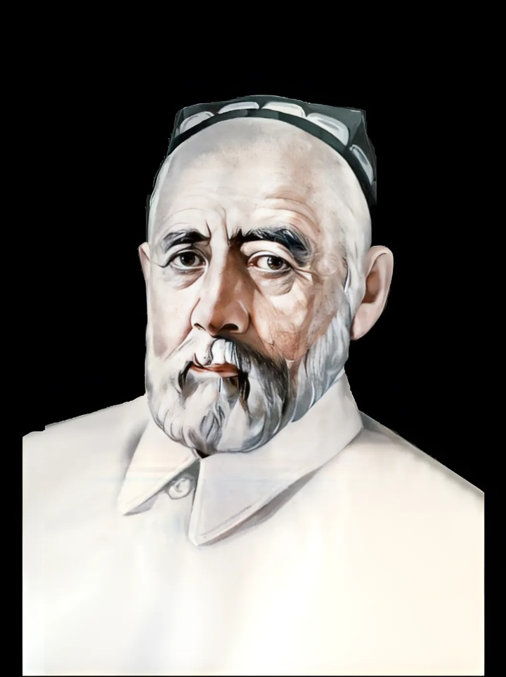
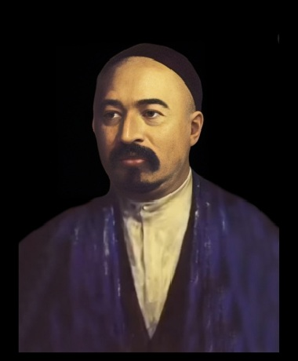
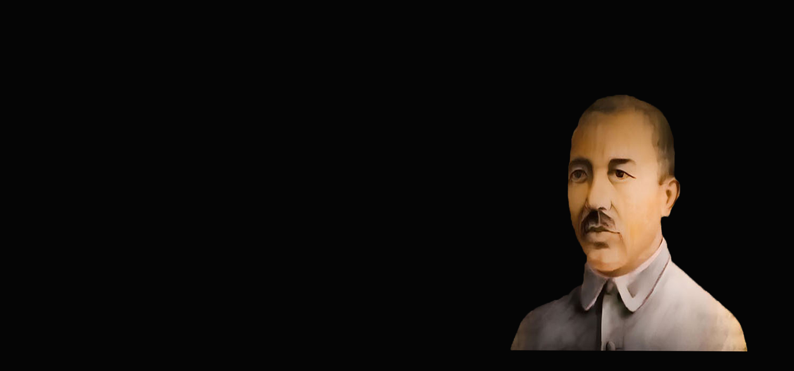

Jadidchilik yetakchisi
Jadidchilik yetakchisi
Mahmudxo'ja Behbudiy
Turkiston jadidchilik harakatining asoschisi, birinchi o'zbek dramaturgi («Padarkush»), noshir, «Oyina» jurnali va «Samarqand» gazetasi muharriri.
 O'zbek romanchiligi asoschisi
O'zbek romanchiligi asoschisi
Abdulla Qodiriy
O'zbek adabiyotida birinchi roman «O'tkan kunlar» va «Mehrobdan chayon» muallifi, milliy matbuot va satira («Mushtum») fidoyisi.

Ma'rifatparvarMunavvarqori Abdurashidxonov
Turkistonda birinchi yangi usul jadid maktablari, «Shukrat», «Sadoyi Turkiston» gazetalari tashkilotchisi va «Komyak» jamiyati rahnamosi.

Alloma va davlat arbobiAbdurauf Fitrat
«Munozara», «Hind sayyohi», «Ona tili», «O'zbek tili qoidalari» asarlari muallifi, Buxoro Xalq Sovet Respublikasi maorif noziri.
 Otashin shoir
Otashin shoir
Abdulhamid Cho'lpon
«Kecha va kunduz» romani, «Uyg'onish», «Buloqlar» to'plamlari muallifi, milliy ozodlik va hurriyat kuychisi.
 Pedagog va dramaturg
Pedagog va dramaturg
Abdulla Avloniy
«Turkiy Guliston yoxud Axloq» asari muallifi, «Turon» teatr truppasi asoschisi, yangi usul maktablari uchun bir qancha darsliklar tuzuvchisi.

Sayyoh va matbaachiIs'hoqxon Ibrat
Namanganda ilk milliy «Matbaai Is'hoqiya»ni ochgan, «Lug'ati sitta alsina» (6 tilli lug'at) va «Tarixi madaniyat» kitoblari muallifi.

Dramaturg va bastakorHamza Hakimzoda Niyoziy
«Maysaraning ishi», «Boy ila xizmatchi» asarlari, yangi usul maktablari tashkilotchisi va «Yengil adabiyot» darsliklari muallifi.

Alloma va adibSadriddin Ayniy
Buxoro jadidchilik harakatining faol namoyandasi, «Buxoro jallodlari», «Esdaliklar» asarlari va ilk maktab darsliklari muallifi.

Tilshunos va noshirAshurali Zohiriy
«Sadoyi Farg'ona» gazetasi muharriri, o'zbek tilining dastlabki izohli lug'atini tuzgan zabardast ma'rifatparvar olim.

Publitsist va jurnalistG'ozi Yunus
«Taraqqiy», «Najot» gazetalari tahririyat a'zosi, o'tkir publitsist va jadid matbuotining eng faol mualliflaridan biri.
 Jadidshunos olim
Jadidshunos olim
Begali Qosimov
O'zbekiston Respublikasi fan arbobi, filologiya fanlari doktori, professor. O'zbekistonda jadidshunoslik ilmiy maktabining asoschisi.